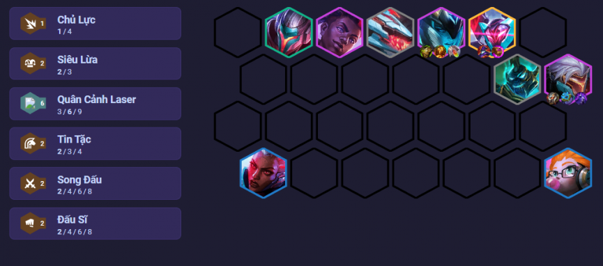
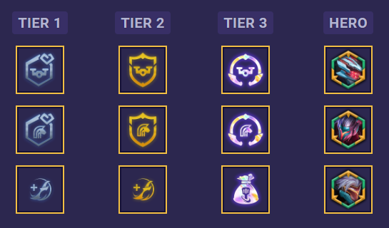

Đội hình này tập trung vào chủ lực Zed với mốc 6 quân cảnh laser, Song Đấu và Tin Tặc chỉ kích ở mốc
2 nhưng cũng rất hữu dụng khi ship thẳng Zed ra tuyến sau ám sát kẻ địch và thăng tiến sức mạnh
liên tục. Zed mang Nỏ Sét là để giảm kháng phép của kẻ địch tuyến sau (drone của Quân Cảnh Laser
gây sát thương phép). Với việc được đặt an toàn ở tuyến dưới, gã sát thủ này có thể tích quyền năng
rất tốt. Để đảm bảo điều đó, mang thêm một Áo Choàng Bóng Tối hoặc Huyết Kiếm / Nắm Đấm Công lý
Độ khó: Thấp
Mordekaiser (5 vàng)
Sejuani (4 vàng)
>Ekko (4 vàng)
>Zed (4 vàng)
>Senna (3 vàng)
Zoe (3 vàng)
Yasuo (2 vàng)
Renekton (1 vàng)
Có lõi anh hùng Zed
Có vương miện hoặc trái tim quân cảnh laser
Vòng đi chợ ưu tiên lấy: cung, kiếm
Lõi anh hùng Renekton - Nhận 8% dame, tăng gấp 3 khi dưới 50% máu
Lõi anh hùng Yasuo - Tướng không đứng cạnh đồng minh nào được tăng 25% tốc độ đánh
Lõi anh hùng Zed - Nhận 7% tốc độ đánh. Sau khi hạ gục mục tiêu, lướt tới kẻ địch khác và nhân 3 chỉ số
Trái tim, vương miện quân cảnh laser / tin tặc
Chiến lược phẩm
Túi đồ URF
Di chuyển Hecarim thay vì Zed
Nếu có ấn Quân Cảnh Laser, đưa cho Zoe và thay một tướng Quân Cảnh Laser bằng Fiddlestick
Nếu Ashe xuất hiện nhiều từ sớm, chơi Ashe Slow Roll
Để Samira và Miss Fortune ở 2 góc khác nhau, giảm thiểu rủi ro